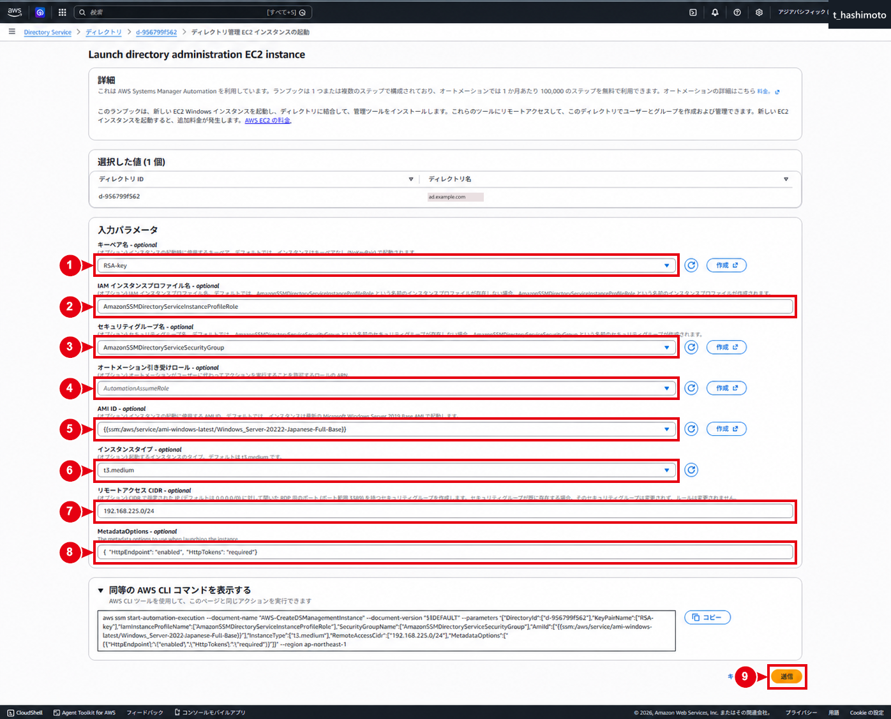
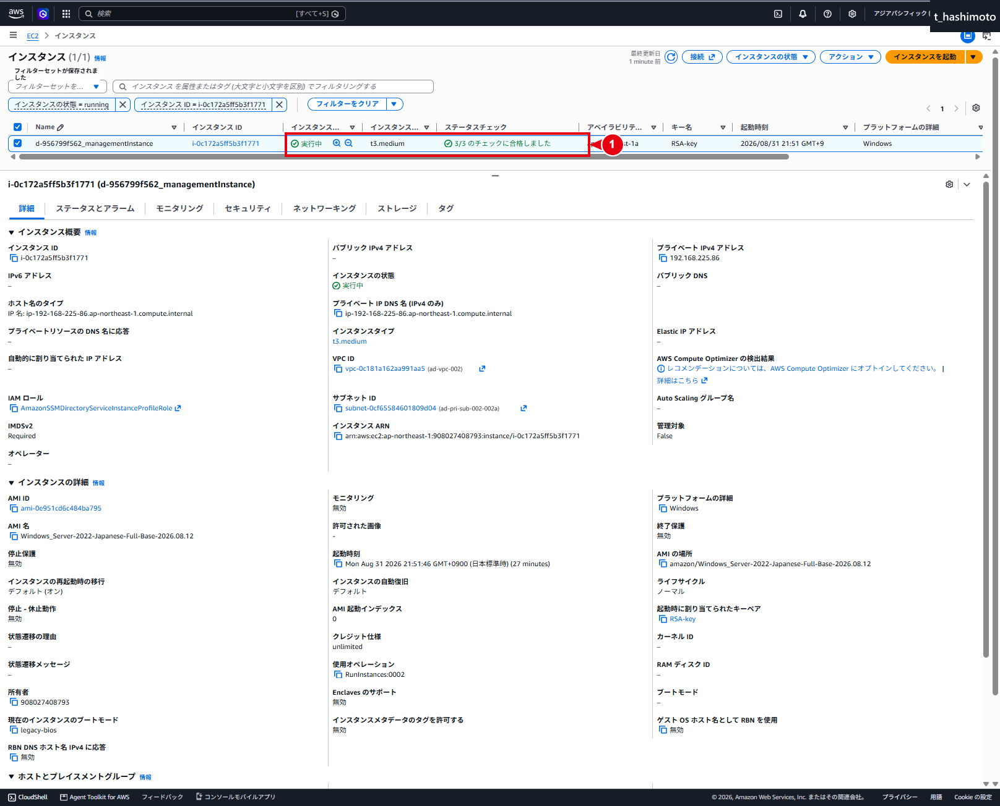
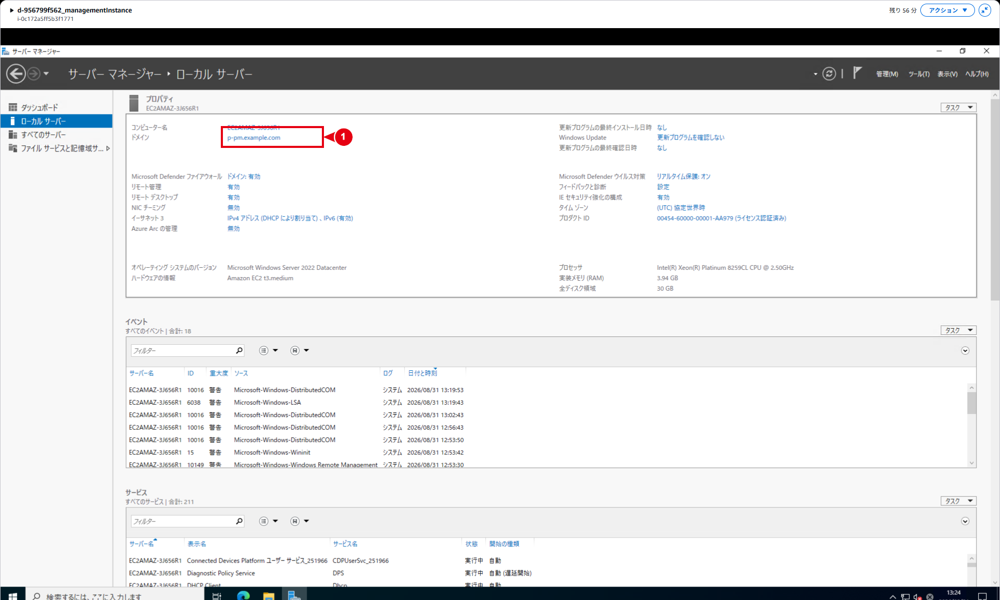
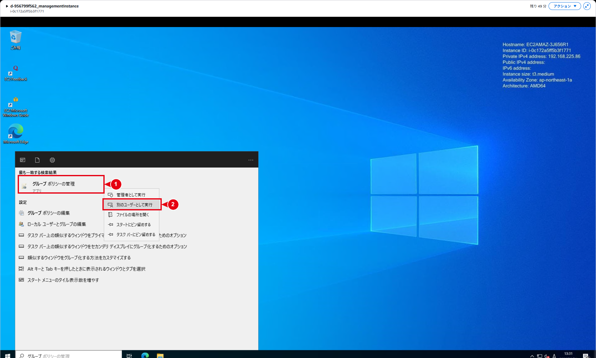
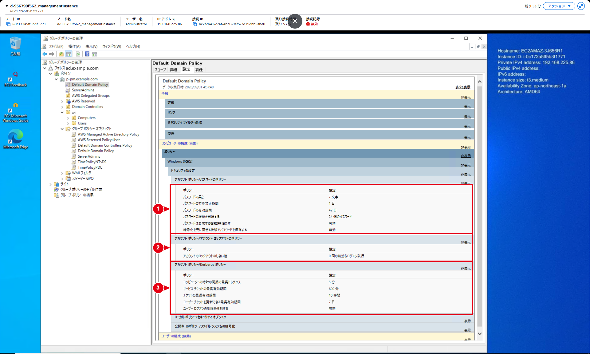
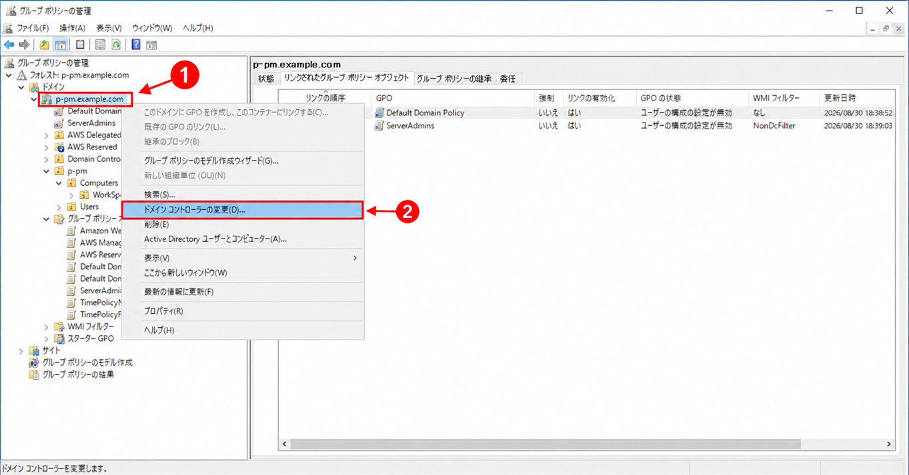
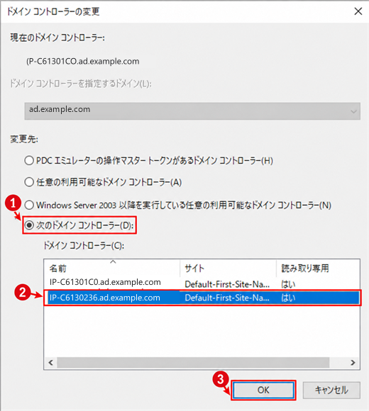

管理用EC2・Active Directory管理
AWS Managed Microsoft ADを管理するWindows Server EC2を起動し、Systems Manager経由で接続する
ドメイン参加、ADUC、GPMCおよびDefault Domain Policyの確認まで整理する
管理用EC2起動・接続・AD管理開始手順
1. 文書の目的
本書では、作成済みのAWS Managed Microsoft ADを管理するため、Directory Serviceの画面から管理用Windows EC2インスタンスを起動し、次の状態まで確認する手順を記載する
- AWS Systems Manager Automationにより管理用EC2を起動
- EC2の状態が「実行中」、ステータスチェックが正常になることを確認
- Systems Manager Fleet Managerから管理用EC2へ接続
- 管理用EC2が対象ドメインへ参加していることを確認
- 許可されたドメインユーザーとしてグループポリシーの管理（GPMC）を起動
- AWS Managed Microsoft ADが作成したGPOとDefault Domain Policyの設定を変更前の基準値として確認
本書で行うGPOの確認は、管理用EC2および管理ツールが使用できることを確認するための読み取り作業である。ADユーザー、OU、GPO、VPCピアリングおよびセキュリティグループの変更は、後続の専用手順で行う
重要
図8は管理用EC2の起動確認ではない。管理用EC2へ接続し、GPMCをドメイン資格情報で起動した後に行う「既定ポリシーの確認」である
画像の提出方針
2. 本書の位置付けと推奨作業順序
新規構築では、依存関係を確認しやすい次の順序を推奨する
| 順序 | 作業 | 主な手順書 |
|---|---|---|
| 1 | VPC、サブネット、ルートテーブル、ネットワークACLおよびDNS設計を準備する | ネットワーク構築資料 |
| 2 | AWS Managed Microsoft ADを作成し、「アクティブ」を確認する | AWS Managed Microsoft AD構築手順 |
| 3 | 管理用EC2を起動し、ドメイン参加とAD管理ツールの利用開始を確認する | 本書 |
| 4A | AD Connector用サービスアカウント、Connectorsグループ、WorkSpaces用OUおよび委任権限を準備する | AD Connector用サービスアカウント作成・権限委任・運用手順 |
| 4B | VPCピアリングを作成し、両方向のルート、ネットワークACLおよびDNS到達性を確認する | ネットワーク接続手順 |
| 5 | Managed ADのドメインコントローラー用SGへ、AD Connector側VPCからの承認済み通信を追加する | VPCピアリング・DC用SG変更・AD Connector作成手順 |
| 6 | AD Connectorを作成し、「アクティブ」と自動作成SGを確認する | VPCピアリング・DC用SG変更・AD Connector作成手順 |
| 7 | AD ConnectorをWorkSpacesへ登録し、ターゲットOUを設定する | Amazon WorkSpaces作成・バンドル設定手順 |
| 8 | パイロットWorkSpaceを1台作成し、「使用可能」とログイン成功を確認する | Amazon WorkSpaces作成・バンドル設定手順 |
| 9 | パイロットからWSP管理テンプレートを取得し、中央ストアへ配置する | Amazon WorkSpaces用GPO作成・適用・運用手順の4章 |
| 10 | WorkSpaces専用GPOを作成して専用OUへリンクする | Amazon WorkSpaces用GPO作成・適用・運用手順の5～8章 |
| 11 | パイロットでOU所属、gpresultおよび実動作を確認する |
Amazon WorkSpaces作成・バンドル設定手順およびAmazon WorkSpaces用GPO作成・適用・運用手順 |
| 12 | 確認後に残りのWorkSpacesを展開する | Amazon WorkSpaces作成・バンドル設定手順およびAmazon WorkSpaces用GPO作成・適用・運用手順 |
ユーザーとグループの一般的な管理は、必要になった時点でAWS Directory Serviceによるユーザーおよびグループ管理手順を使用する
順序上の補足
VPCピアリング、両方向のルート、ネットワークACLを先に成立させ、その後にManaged ADのドメインコントローラー用SGを変更する。SGだけを先に変更しても、通信経路がなければAD Connector側VPCから到達できない
手順4Aと4Bは並行実施できるが、両方が完了するまでAD Connectorを作成しない。OU設計、サービスアカウントおよび委任権限はAD Connector作成前に準備する。一方、WSP固有GPOは、パイロットWorkSpaceからwsp.admx／wsp.admlを取得した後に作成・確認する
3. 自動作成されるセキュリティグループの区別
本構成では、名前が似ている複数のセキュリティグループが存在する。Directory ID、VPCおよび関連リソースを照合してから操作する
| SG | 作成時点 | 用途 | 本書での扱い |
|---|---|---|---|
| Managed ADのドメインコントローラー用SG | Managed AD作成時 | ドメインコントローラーのAD通信 | 本書では変更しない。VPCピアリングとルート確認後、VPCピアリング・DC用SG変更・AD Connector作成手順で変更する |
| 管理用EC2のSG | 管理用EC2起動時 | 管理用EC2への接続と通信 | 図2で指定またはAutomationにより作成される。承認済みCIDRとルールを確認する |
| AD ConnectorのSG | AD Connector作成時 | AD Connectorのネットワーク通信 | AD Connector作成後に確認する。Managed ADのDC用SGと取り違えない |
Managed ADのDC用SGは、通常、対象Directory IDと「controllers」を含む名前で識別できる。AD Connector側でも似た形式のSGが作成されるため、名前だけではなくDirectory IDとVPCを確認する
変更対象の確認
後続手順で接続元VPCのCIDRを追加する対象は、Managed ADのドメインコントローラー用SGである。管理用EC2のSGを代わりに変更しても、AD Connectorからドメインコントローラーへの通信許可にはならない
4. 前提条件
作業前に次を確認する
- 対象リージョンが承認済みのリージョンであること。本検証画像はアジアパシフィック（東京）で取得している
- AWS Managed Microsoft ADのステータスが「アクティブ」であること
- 対象のDirectory ID、DNSドメイン名、VPCおよび2つのDNS IPアドレスを確認済みであること
- Systems Managerを使用できるよう、対象VPCから必要なAWSサービスエンドポイントへ到達できること
- 管理用EC2へ付与するIAMインスタンスプロファイルに、Systems ManagerおよびDirectory Serviceのドメイン参加に必要な権限があること
- AmazonSSMManagedInstanceCore および AmazonSSMDirectoryServiceAccess の使用可否を、顧客のIAM設計で確認していること
- Automation用IAMロールを指定する場合は、承認済みのロールが用意されていること
- 使用するWindows Server AMI、インスタンスタイプ、キーペア、管理用EC2のSG、接続元CIDRおよびIMDSv2設定が承認済みであること
- EC2、EBSおよび関連サービスの利用料金を確認していること
- 管理用EC2へ接続するための認証方式と、ADUC／GPMCを実行するドメイン資格情報を準備していること
- パスワード、秘密鍵またはシークレットを手順書、チケット、チャットおよび画面キャプチャへ記録しないこと
5. 入力値の確認
図2は検証環境の入力例である。本番作業では、同じ値を転記せず、承認済み設計値へ読み替える
| 画像内番号 | 項目 | 検証画像の値 | 本番での扱い |
|---|---|---|---|
| ① | キーペア名 | RSA-key | 承認済みのキーペアを選択する。Fleet Managerのみを使う場合も、障害対応方針を踏まえて採否を決める |
| ② | IAMインスタンスプロファイル名 | AmazonSSMDirectoryServiceInstanceProfileRole | 必要なSystems Manager／Directory Service権限を確認する |
| ③ | セキュリティグループ名 | AmazonSSMDirectoryServiceSecurityGroup | 管理用EC2のSGである。Managed ADのDC用SGと区別する |
| ④ | Automation引き受けロール | AutomationAssumeRole | 顧客IAM設計で承認されたAutomation用ロールを使用する |
| ⑤ | AMI ID | Windows Server 2022 Japanese Full BaseのSSMパラメータ | 構築時点の承認済みWindows Server AMIを選択する |
| ⑥ | インスタンスタイプ | t3.medium | 管理作業と顧客標準に適合するサイズを選択する |
| ⑦ | リモートアクセスCIDR | 192.168.225.0/24 | 必要最小限の承認済みCIDRを設定し、0.0.0.0/0を使用しない |
| ⑧ | メタデータオプション | HttpEndpoint=enabled、HttpTokens=required | IMDSv2を必須とする |
| ⑨ | 送信 | － | ①～⑧を再確認してから選択する |
6. 管理用EC2を起動する
6.1 Directory Serviceから起動画面を開く
- AWSマネジメントコンソールへサインイン
- 対象リージョンを確認
- AWS Directory Serviceを開く
- 「ディレクトリ」から、管理対象のAWS Managed Microsoft ADのDirectory IDを選択
- ディレクトリのステータスが「アクティブ」であることを確認
- 画面右上の「アクション」を開く
- 「ディレクトリ管理 EC2 インスタンスの起動」を選択

画像内の番号
- ① 「アクション」を開く
- ② 「ディレクトリ管理 EC2 インスタンスの起動」を選択する
この操作では、Systems Manager Automationの AWS-CreateDSManagementInstance が使用される。Directory Serviceから起動する管理用EC2には、AD DSおよびAD LDSの管理ツールがあらかじめ導入される
6.2 起動条件を入力する
- 画面上部のDirectory IDとディレクトリ名が対象と一致していることを確認
- 5章の表に従い、①から⑧までを選択または入力
- 画面に表示できるAWS CLIコマンドは、必要な場合だけ作業証跡として保存します。資格情報を含めないでください
- 入力値を別担当者または承認済みパラメータシートと照合
- 問題がなければ⑨の「送信」を選択

画像内の番号
- ① キーペア名を選択する
- ② IAMインスタンスプロファイル名を確認する
- ③ 管理用EC2で使用するセキュリティグループを確認する
- ④ Automation引き受けロールを確認する
- ⑤ 使用するWindows Server AMIを確認する
- ⑥ インスタンスタイプを確認する
- ⑦ リモートアクセスを許可するCIDRを確認する
- ⑧ メタデータオプションでIMDSv2が必須になっていることを確認する
- ⑨ 「送信」を選択する
期待結果
- 管理用EC2の起動要求を受け付けたメッセージが表示される
- Systems Manager Automationの実行が開始される
- EC2コンソールに管理用Windowsインスタンスが作成される
- 指定した管理用EC2のSG、IAMインスタンスプロファイル、AMIおよびインスタンスタイプが関連付く
停止条件
Directory ID、VPC、SG、接続元CIDR、IAMロール、AMIまたはインスタンスタイプに誤りがある場合は、「送信」を選択せず修正する。送信後にAutomationが失敗した場合は、同じ操作を繰り返す前にAutomation実行履歴の失敗ステップを確認する
7. EC2の稼働状態を確認する
- EC2コンソールの「インスタンス」を開く
- Automationが作成した管理用EC2を、インスタンス名とインスタンスIDで特定
- インスタンスの状態が「実行中」であることを確認
- ステータスチェックが「3/3 のチェックに合格しました」になるまで待機
- 詳細画面で、インスタンスID、プライベートIP、VPC、サブネット、IAMロール、関連SG、AMI、インスタンスタイプおよびIMDSv2の状態を作業記録へ残す
- Systems ManagerのFleet Managerに対象ノードが表示されることを確認

画像内の番号
- ① インスタンスの状態が「実行中」であり、ステータスチェックが「3/3 のチェックに合格しました」であることを確認する
期待結果
- 管理用EC2が実行中である
- EC2のステータスチェックがすべて正常である
- Systems Managerの管理対象ノードとして表示される
EC2が実行中でもFleet Managerに表示されない場合は、SSM Agent、IAMインスタンスプロファイル、対象リージョン、DNSおよびSystems Managerエンドポイントへの到達性を確認する
8. Fleet Managerから接続する
- AWS Systems Managerを開く
- 「Fleet Manager」を開く
- 管理用EC2のノード名またはインスタンスIDを選択
- 「ノードアクション」から「リモートデスクトップで接続」を選択
- 承認済みの認証方式を選択
- Windows資格情報を使用する場合はユーザー名とパスワードを入力します。キーペアを使用する場合は、承認された方法で秘密鍵を指定
- 「接続」を選択
- デスクトップが表示されたら、接続中のノード名とインスタンスIDを確認

画像内の番号
- ① 接続中のノード名とインスタンスIDが、起動した管理用EC2と一致していることを確認する
期待結果
- ブラウザ内に管理用EC2のWindowsデスクトップが表示される
- 接続先のノード名とインスタンスIDが作業対象と一致する
接続時の注意
Fleet Managerのリモートデスクトップ接続自体では、インバウンドポートを明示的に開く必要はない。図2のリモートアクセスCIDRによって管理用EC2のSGにRDPルールを設ける場合でも、承認済みの限定した送信元だけを許可する
図4は接続完了後の証跡です。Fleet Managerのノード選択、ノードアクション、認証方式および「接続」までの途中画面は未取得です。顧客向けに全クリックを画像化する場合は、パスワードと秘密鍵を表示せず追加取得する
9. ドメイン参加を確認する
- 管理用EC2で「サーバー マネージャー」を開く
- 「ローカル サーバー」を選択
- 「ドメイン」に、対象のDNSドメイン名が表示されることを確認

画像内の番号
- ① 「ドメイン」に対象ドメインが表示されることを確認する。検証画像では ad.example.com
期待結果
- 管理用EC2が対象のAWS Managed Microsoft ADドメインへ参加している
- サーバー マネージャーに対象DNSドメイン名が表示される
ドメインが表示されない場合は、対象Directory ID、VPC、DNS、IAMインスタンスプロファイルおよびAutomation実行結果を確認し、AD管理作業へ進まない
10. ドメイン資格情報でGPMCを起動する
Fleet Manager接続時にローカルのAdministratorを使用していても、その資格情報だけでActive Directoryを変更できるとは限らない。ADUCおよびGPMCは、必要な権限を持つ承認済みのドメインユーザーとして起動する
- Windowsの検索欄で「グループ ポリシーの管理」を検索
- 検索結果の「グループ ポリシーの管理」を右クリック
- 「別のユーザーとして実行」を選択
- 承認済みのドメインユーザー名を入力します。パスワードが表示された画面キャプチャは取得しないでください
- GPMCが起動し、対象フォレストとドメインが表示されることを確認

画像内の番号
- ① 「グループ ポリシーの管理」を右クリックする
- ② 「別のユーザーとして実行」を選択する
権限上の注意
日常作業では、作業内容に必要な委任権限だけを持つドメインユーザーを使用する。個人の通常利用アカウントとサービスアカウントを共用せず、不要な高権限グループへ追加しない
11. GPMCの初期表示を確認する
- GPMCで対象フォレスト、対象ドメインの順に展開
- 「グループ ポリシー オブジェクト」を選択
- GPO一覧が表示されることを確認
- GPO名、GPOの状態、WMIフィルター、更新日時および所有者を変更前の基準値として記録
画像内の番号
- ① 「グループ ポリシー オブジェクト」を選択する
- ② 登録済みGPOの一覧を確認する
期待結果
- 対象ドメインのGPO一覧を読み取れる
- 検証画像では7件のGPOが表示されている
- AWS Managed Microsoft ADが作成したGPOと顧客が作成したGPOを識別できる
AWSが予約しているGPOは、設計上、削除、変更またはリンク解除できない。WorkSpaces固有の設定は、AWS管理GPOを変更せず、承認済みの専用GPOを作成して対象OUへリンクする。具体的な変更手順はAmazon WorkSpaces用GPO作成・適用・運用手順を使用する
12. Default Domain Policyのアカウントポリシーを確認する
本章は、管理用EC2およびGPMCの利用開始後に行う読み取り確認である。管理用EC2の起動工程とは分けて記録する
- GPMCで対象ドメインを展開
- 「Default Domain Policy」を選択
- 「設定」タブを開く
- 「コンピューターの構成」、「ポリシー」、「Windowsの設定」、「セキュリティの設定」、「アカウント ポリシー」の順に展開
- パスワードポリシー、アカウントロックアウトポリシーおよびKerberosポリシーを確認
- 値を変更せず、確認結果を作業記録へ残す

画像内の番号
- ① パスワードポリシーを確認する
- ② アカウントロックアウトポリシーを確認する
- ③ Kerberosポリシーを確認する
検証画像で確認できる値は次のとおりである。これらは ad.example.comの取得時点のDefault Domain Policy であり、別環境へそのまま転記しない
| 分類 | 項目 | 検証画像の値 |
|---|---|---|
| パスワード | パスワードの長さ | 7文字 |
| パスワード | パスワードの変更禁止期間 | 1日 |
| パスワード | パスワードの有効期間 | 42日 |
| パスワード | パスワードの履歴を記録する | 24個のパスワード |
| パスワード | パスワードは要求する複雑さを満たす | 有効 |
| パスワード | 暗号化を元に戻せる状態でパスワードを保存する | 無効 |
| ロックアウト | アカウントのロックアウトのしきい値 | 0回（無効なログオンを許可） |
| Kerberos | コンピューターの時計の同期の最大トレランス | 5分 |
| Kerberos | サービスチケットの最長有効期間 | 600分 |
| Kerberos | チケットの最長有効期間 | 10時間 |
| Kerberos | ユーザーチケットを更新できる最長有効期間 | 7日 |
| Kerberos | ユーザーログオンの制限を強制する | 有効 |
Default Domain PolicyとPSOの違い
図8で確認できるのはDefault Domain Policyの設定です。特定ユーザーに実際に適用される細かなパスワードポリシー（PSO）の結果ではありません。ユーザーまたは所属グループにPSOが割り当てられている場合は、実効値が図8と異なることがある
対象ユーザーの実効PSOは、Active Directory PowerShellで Get-ADUserResultantPasswordPolicy -Identity '対象ユーザー名' を実行して確認する。net userの出力だけをPSOの証跡にしない。PSOが割り当てられていない場合は、Default Domain Policyが使用される
AWS Managed Microsoft ADの既定GPOを直接変更しない。パスワード要件を対象別に変更する場合は、AWSが用意する細かなパスワードポリシーの採用、対象グループ、優先順位、切り戻しおよび実効確認を別作業として設計する
13. 異常時の確認順序
13.1 Automationが失敗する
- Systems Manager Automationの実行履歴を開く
- 失敗したステップとエラーメッセージを確認
- IAMロール、インスタンスプロファイル、VPC、サブネット、SG、AMIおよびサービスエンドポイントへの到達性を確認
- 原因を修正してから再実行
- 失敗実行で作成されたEC2、ENI、EBS、SGまたはIAMリソースが残っていないか確認
13.2 Fleet Managerに表示されない
- EC2が実行中であることを確認
- 対象リージョンが一致していることを確認
- SSM Agentが起動していることを確認
- IAMインスタンスプロファイルのSystems Manager権限を確認
- DNSおよびSystems Managerエンドポイントへの到達性を確認
13.3 GPMCに対象ドメインが表示されない
- 図5のドメイン参加状態を再確認
- GPMCを起動したユーザーが対象ドメインの資格情報であることを確認
- DNSで対象ドメインとADのSRVレコードを解決できることを確認
- 管理用EC2からドメインコントローラーへの必要通信が許可されていることを確認
13.4 GPMCの参照先ドメインコントローラーを切り替えて表示差異を再確認する（異常時のみ）
複数のドメインコントローラー間でGPO、リンクまたは更新日時の表示が一致しない場合だけ実施する。これはGPMCが問い合わせる参照先ドメインコントローラーを一時的に切り替える操作であり、AWS Managed Microsoft ADのドメインコントローラー自体を変更、交換または再起動する操作ではない。また、Active DirectoryまたはSYSVOLのレプリケーション障害そのものを修復する操作でもない。2台は主系／待機系ではないため、この操作を「主系切替」と説明しない。2台の役割は、AWS Managed Microsoft ADの2台ドメインコントローラー構成・役割を参照する
- GPMCの左ペインで対象ドメイン
ad.example.comを右クリック - 「ドメイン コントローラーの変更」を選択

画像内の番号
- ① 対象ドメインを選択する
- ② 「ドメイン コントローラーの変更」を選択する
- 「次のドメイン コントローラー」を選択
- 現在とは別の確認対象ドメインコントローラーを一覧から選択
- 「OK」を選択

画像内の番号
- ① 「次のドメイン コントローラー」を選択する
- ② 確認対象のドメインコントローラーを選択する
- ③ 「OK」を選択する
- GPMCを最新の情報に更新し、対象GPOの更新日時、リンク先、リンク有効状態および設定値を再確認
- 表示差異が残る場合は、同じ設定を重ねて変更せず、変更作業を止めてAD DSおよびSYSVOLのレプリケーション状態を確認
注意
参照先の切り替えは通常の構築手順には含めない。レプリケーションの収束確認や障害調査で使用し、どのドメインコントローラーを参照して取得した証跡かを作業記録へ残す
14. 停止・削除時の注意
- 管理作業が終わったらFleet Managerの接続を終了する
- 管理用EC2を常時稼働させない設計では、承認済みの運用手順に従って停止または削除する
- EC2を削除する前に、後続のADUC、GPMC、DNS確認および障害調査で必要でないことを確認する
- Automationが作成したSG、IAMロールまたはインスタンスプロファイルを削除する場合は、他リソースから参照されていないことを確認する
- Managed ADのドメインコントローラー用SG、Directory ServiceのENIおよびAWS管理GPOを、管理用EC2の後片付けとして削除しない
15. 後続手順
管理用EC2の利用開始を確認した後は、次の順に進む
- AD Connector用サービスアカウント、Connectorsグループ、WorkSpaces用OUおよび委任権限を準備
- VPCピアリングが「アクティブ」であることを確認
- Managed AD側とAD Connector側の両方向のルートを追加し、ネットワークACLを確認
- Managed ADのドメインコントローラー用SGへ、承認済みの接続元CIDRまたは必要ポートを追加
- AD Connectorを作成して「アクティブ」を確認
- WorkSpacesへディレクトリを登録し、ターゲットOUを確認
- パイロットWorkSpaceを1台作成し、「使用可能」とログイン成功を確認
- パイロットから
wsp.admx／wsp.admlを取得し、中央ストアへ配置 - WorkSpaces専用GPOを対象OUへリンク
- パイロットで
gpupdate、gpresultおよび実動作を確認 - 確認後に残りのWorkSpacesを展開
管理用EC2からManaged ADへ接続できることは、同一VPC内の管理経路の確認である。AD Connector側VPCからVPCピアリングを経由して到達できることの証明にはならない。AD Connector作成前に、AD Connectorと同等のネットワーク条件を持つ接続元からDNS、KerberosおよびLDAP等の疎通を別途確認する